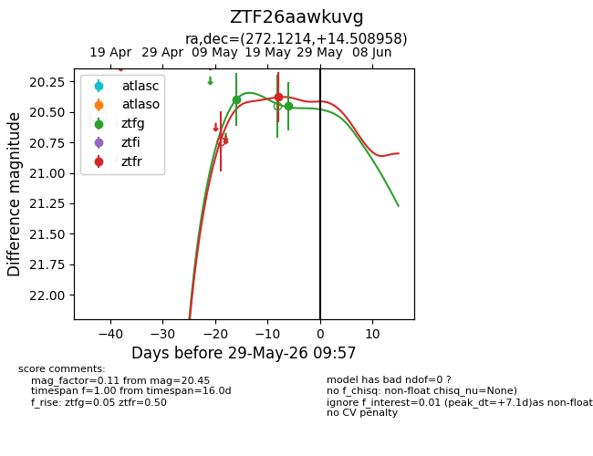
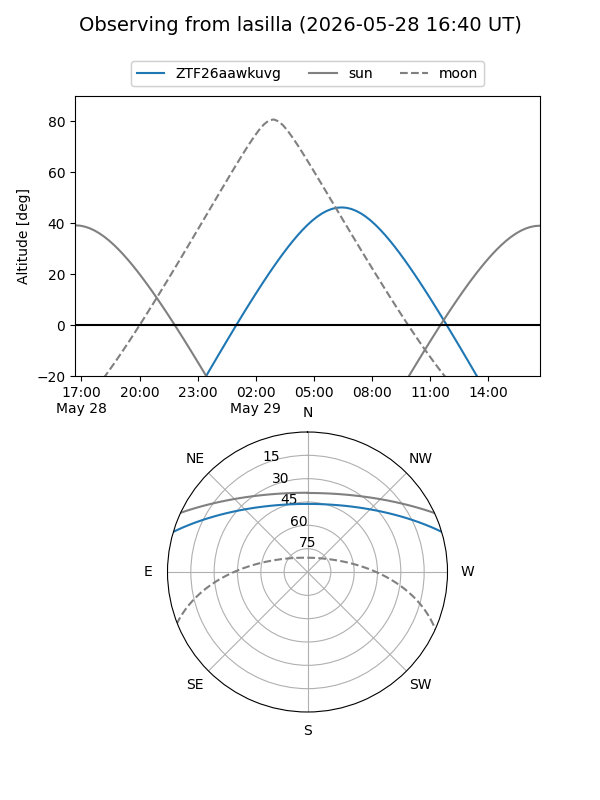
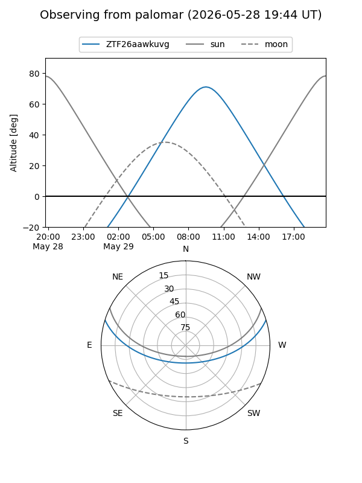
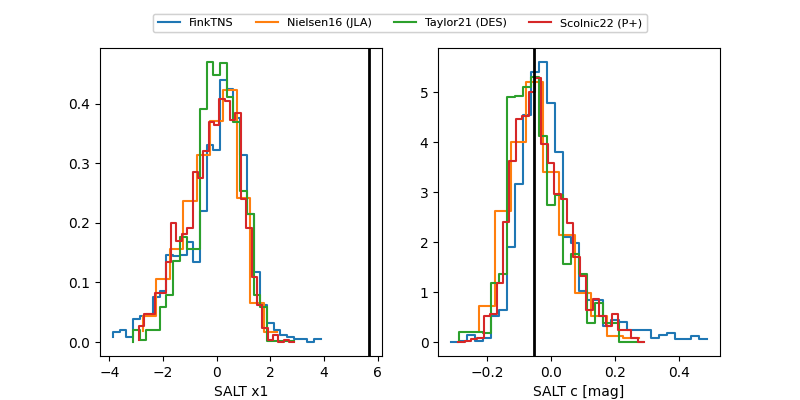

ZTF26aawkuvg
Target ZTF26aawkuvg at 2026-05-29 09:59
Aliases and brokers:
lsst-FINK: link
lsst-Lasair: link
lsst-ALeRCE: link
ztf-FINK: link
ztf-Lasair: link
ztf-ALeRCE: link
alt names
ZTF26aawkuvg (ztf,fink_ztf)
Coordinates:
equatorial (ra, dec) = 272.1214,+14.50896
equatorial (HMS+DMS) = 18:08:29.13,+14:30:32.25
galactic (l, b) = (41.3476,+15.94845)
Flags:
Photometry:
last ztfg=20.45, ztfr=20.38
2 ztfg, 1 ztfr detections
Lightcurve

Visibility


Additional plots
